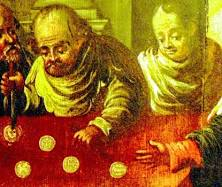

The 1370 Eucharistic Miracle of Brussels (also historically known as the Brussels Massacre or Sacrament of Miracle) refers to a medieval legend where consecrated Hosts were allegedly stolen and stabbed by local Jews on Good Friday, causing human blood to miraculously flow from the wafers.
According to the 15th-century account, a wealthy merchant from Enghien bribed an individual to steal 16 consecrated Hosts from a local church. The merchant was mysteriously murdered shortly after, and his widow passed the Hosts to a group of Jews in Brussels. On Good Friday in 1370, they allegedly pierced the Host with daggers, at which point real blood miraculously poured forth.
Believing the Hosts were desecrated, local authorities launched a brutal crackdown. The accused were burned at the stake, and the remaining Jewish community was banished. For centuries, this event formed the basis of the "Sacrament of Miracle". The allegedly undamaged Hosts were venerated as holy relics in the Cathedral of St. Michael and St. Gudula.
Historically, the accusation fueled severe antisemitism and was frequently used to justify the persecution of Jewish communities in Europe. The Catholic Church has since formally addressed these antisemitic origins: